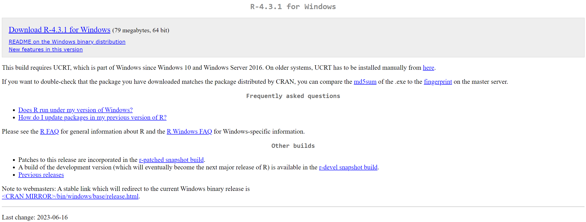
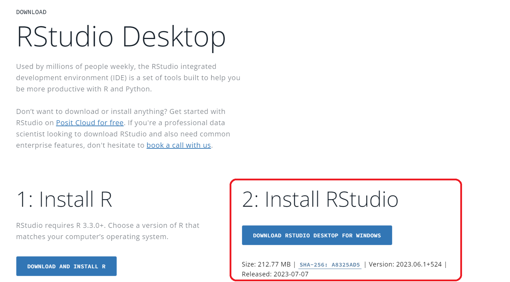
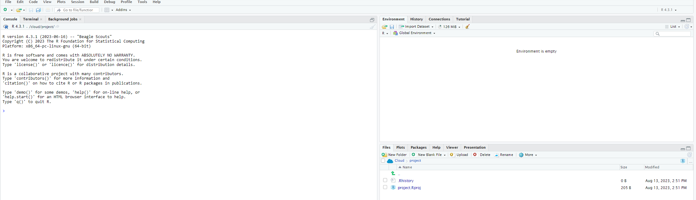
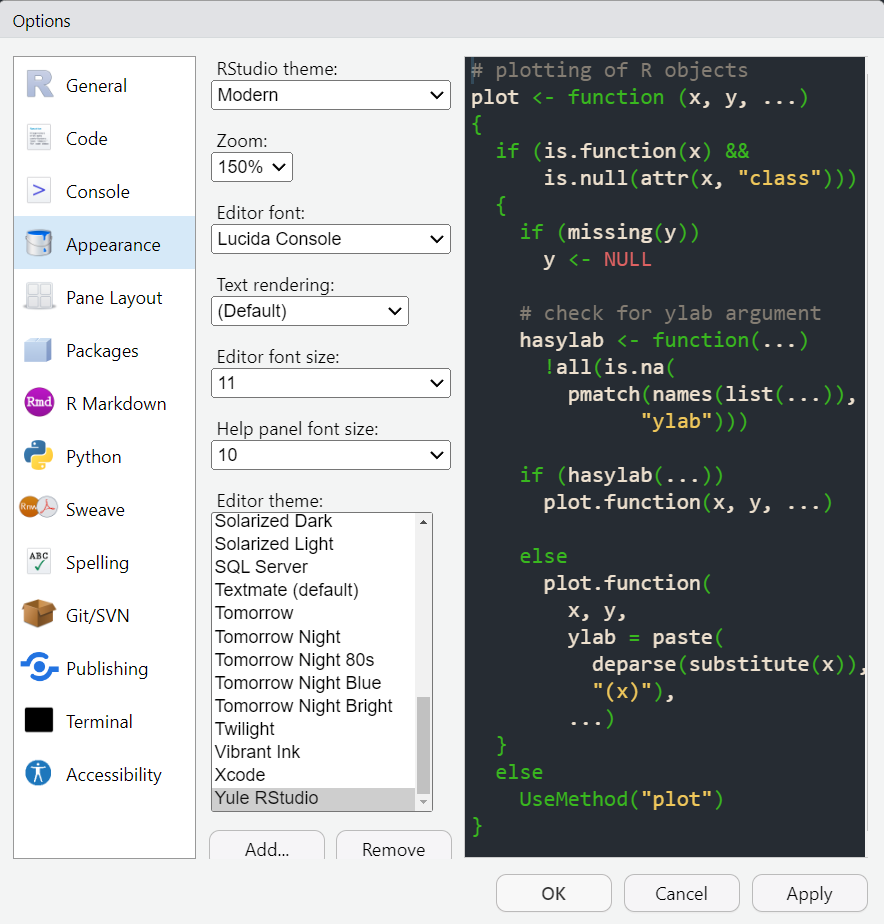
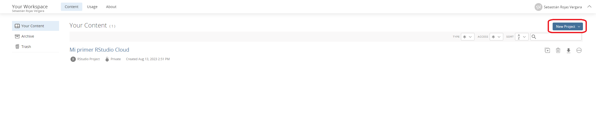
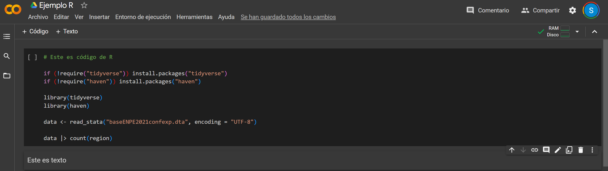

Instalación R y RStudio
Metodología Cuantitativa - TSM301
Clase 0
¡Hola🫡!
En esta presentación encontrarán las instrucciones para instalar los softwares de R y RStudio en el marco de los cursos de Metodología Cuantitativa (TSM301) y Análisis de Regresión Múltiple (TMS302).
Antes de comenzar, les presentamos un video de apenas un minuto del canal de Youtube Fazt Code para que conozcan más sobre este lenguaje de programación.
Instalación de R
Deben dirigirse a la página https://cran.r-project.org/bin/windows/base/
Luego, verán una pantalla como la que se presenta en esta imagen. Seleccionen “Download R-4.3.1 for Windows”.
Una vez den click, comenzará la descarga de un archivo. Deben ejecutarlo y dar “siguiente” en todas las opciones.
Si tienen otro sistema operativo, como MacOS, pueden dirigirse acá.

Instalar RStudio I
Deben ingresar a https://posit.co/download/rstudio-desktop/
Luego, deben seleccionar la opción “Install RStudio”. Esto iniciará una descarga, la que deben ejecutar una vez termine.
En caso de que el programa les pregunte por la versión de R, deben escoger la que está instalada en su computadora. Si aparece 32 o 64 bits, siempre seleccionen esta última.

Instalar RStudio II
Para iniciar busquen en la lupa de sus computadores “RStudio”.
Finalmente, verán una pantalla como la que se muestra a continuación:

Personalización en RStudio I
- Temas: Si quieren cambiar los colores del software deben realizar lo siguiente en el menú superior de RStudio:
Tools → Global Options → Appearance → Editor Theme. Allí encontrarán varias opciones para escoger de acuerdo con su preferencia.

Personalización en RStudio II
Ahora veremos algunos ajustes opcionales en RStudio. ¡Les recomendamos que las activen para que les sea más fácil el trabajo!
- Autoajuste:
Tools → Global Options → Code → Editing → Activen opción "Soft-wrap R source files". Con esta opción el texto se ajustará automáticamente al ancho de su ventana
- Paréntesis arcoíris:
Tools → Global Options → Code → Display → Activen opción "use rainbow parentheses". EnRestaremos usando paréntesis para llamar las funciones. Esta opción facilitará la visualización de los paréntesis y su pareo. Más información veremos en clases!
Correr R en la nube
Para este curso les recomendamos completamente tener instalado R y RStudio en su computador. Sin embargo, por diferentes razones pueden necesitar utilizar R desde la nube. En las siguientes diapositivas se presentan dos opciones:
RStudio Cloud
Google Colab
RStudio Cloud
Deben crearse una cuenta en https://login.rstudio.cloud/login.
Luego les preguntará hacia dónde quieren dirigirse. Deben seleccionar “Posit Cloud”.
En el menú superior derecho, hacer click donde dice
New Proyect → New RStudio Proyect". Luego, se les generará un entorno virtual idéntico a que si instalaran RStudio.

Google Colab
Deben iniciar sesión con una cuenta de Google en https://colab.research.google.com/.
En el menú superior izquierdo deben ir a
Archivo → Nuevo Cuaderno". Luego aEntorno de ejecución → Cambiar entorno de ejecución → Cambiar donde dice "Python 3" por "R".En estos entornos tendrán celdas con código y celdas con texto 1.
Las celdas se pueden iniciar con los botones y se ejecutan utilizando la combinación de teclado
CTRL + ENTER
1 Este entorno se los recomendamos para cuando tengan más clases del curso.

¡Gracias!